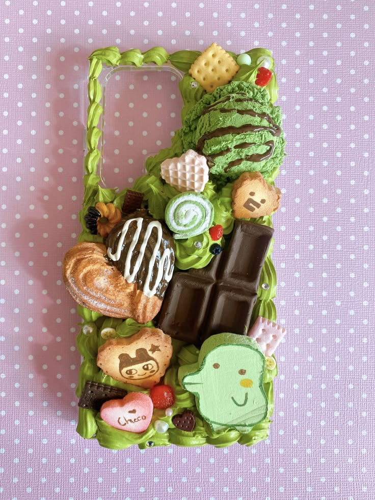
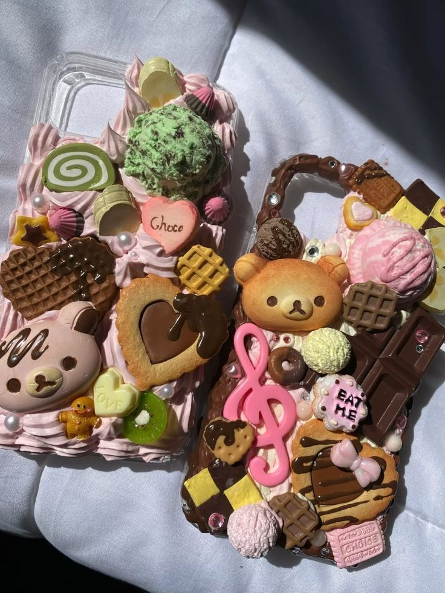
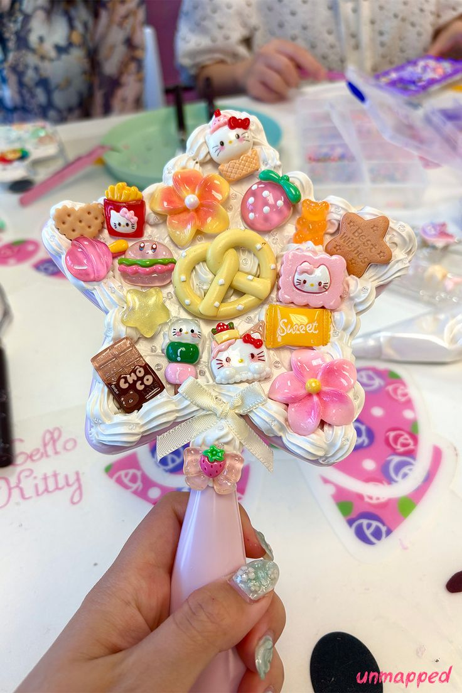
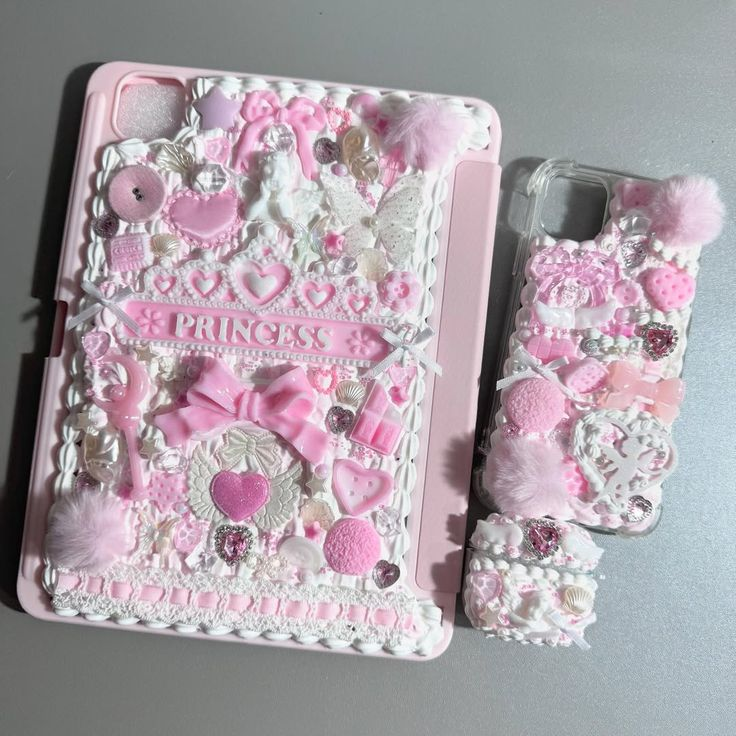
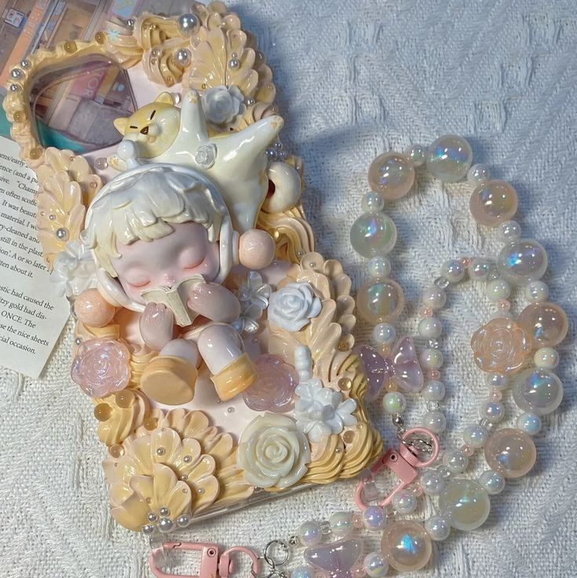

───୨ৎDecoden Intro─
“Decoden” (from the Japanese deco = decoration + den = “denwa,” meaning phone) began as a playful way to customize phone cases and tech accessories within kawaii and street-fashion communities. Over time, it expanded far beyond phones — anything with a hard or flat surface, such as mirrors, frames, compacts, and other everyday items, can become a decorated canvas. The appeal of Decoden comes from transforming something ordinary into something expressive, personal, and visually fun. Each piece becomes a small snapshot of someone’s aesthetic or mood.
───୨ৎWhat Decoden Is Made Of─
Decoden designs typically start with a “cream” base — a silicone-based paste or caulk that’s often labeled as “whipped cream glue” or “simulation cream.” This cream is piped or spread onto the surface to mimic frosting. On top of the cream, creators layer decorations like cabochons, rhinestones, resin charms, pearls, food-shaped embellishments, characters, glitter, and other small accents. The style embraces maximalism, so pieces often feature bright colors, textures, and stacked elements that create a whimsical, over-the-top look.
───୨ৎSupplies & Sourcing (with attention to safe materials)─
Typical Decoden supplies include a blank base (phone case, handheld mirror, compact, picture frame, etc.), piping tools (piping bag + metal or plastic tip), silicone-based “whip” cream glue, and a variety of embellishments: cabochon packs, resin charms, pearls, rhinestones, and themed decorative pieces. Many creators share supply hauls and recommendations on Instagram, TikTok, or Pinterest, and there are kits sold by small shops that package creams, piping tools, and assorted charms all together.
When sourcing materials, it’s best to choose creams and silicone pastes from regulated suppliers or shops that clearly label their ingredients and provide safety information. Non-toxic, low-VOC silicone options are ideal, especially for items that will be handled frequently. Similarly, when shopping for resin charms or cabochons, you should check for well-cured resin, non-yellowing formulas, and safe metal components if any part of the charm includes hardware or plated details. Being selective with materials helps ensure better quality, longevity, and safety.
───୨ৎMaterials Checklist (Beginner-Friendly)─
- Base item: Phone case, handheld mirror, compact, picture frame, jewelry box, or any smooth hard-surface object.
- Cream / Base Texture: Silicone-based whipped cream glue, simulation cream, or low-VOC/non-toxic silicone caulk.
- Piping Tools: Piping bag, metal or plastic piping tips.
- Decorations: Resin cabochons, food charms, character pieces, pearls, rhinestones, flat-back decorations, miniature toys.
- Extras: Tweezers, scissors, craft glue, optional UV resin for glossy finishing touches.
───୨ৎStep-by-Step How-To─
- Prepare the surface. Clean the item with rubbing alcohol or a gentle wipe.
- Set up your layout. Pre-arrange your charms to plan spacing and balance.
- Load the cream. Fill a piping bag with silicone/simulation cream and attach a tip.
- Pipe the base layer. Pipe swirls or dollops, leaving small gaps for charms to sit securely.
- Place the decorations. Press charms gently into the cream, starting with larger pieces.
- Check all angles. Make sure each decoration is supported and not leaning.
- Let it cure. Allow 12–24 hours to fully dry.
- Optional finishing touches. Add clear craft glue or UV resin for extra durability.
───୨ৎSafety & Care Tips─
- Ventilation: Work in a well-ventilated area when using silicone-based creams.
- Non-toxic materials: Choose low-VOC or non-toxic products for frequently handled items.
- Avoid heat: Keep completed pieces away from high temperatures.
- Cleaning: Wipe gently with a damp cloth.
- Durability: Reinforce round-bottomed or heavy charms with extra glue.
───୨ৎInspiration & Community─
Here are some projects sourced from IG and Pinterest. I personally don't make decoden crafts. But you can definitely find tons of online tutorials. It's really satisfying seeing these crafts being made. If you're someone who likes "cake decorating" or anything that involves detailed handiwork, I think you'll really enjoy the visual energy of decoden.





───୨ৎLinks (Credits)─
- Decoden | The Gyaru Wiki | Fandom
- Everything You Need to Make Decoden — new lullabies
- How to Do Decoden Art — Tufted With Love
- What is Decoden Crafts?
- Pinterest source — DECO Phone by tama_kid
- Pinterest source — DECO Phone 2
- Pinterest source — DECO Mirror
- Pinterest source — DECO Pink Trio
- Pinterest source — DECO SP (Skullpanda)